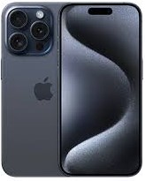

Awesome Landing page
Be amazed by the best looking bootstrap landing page on the web ! your new app deserves an amazing page to show all its features. Clear visual , light colours and beautifully aligned - they all try to make the users aware of your great app features.